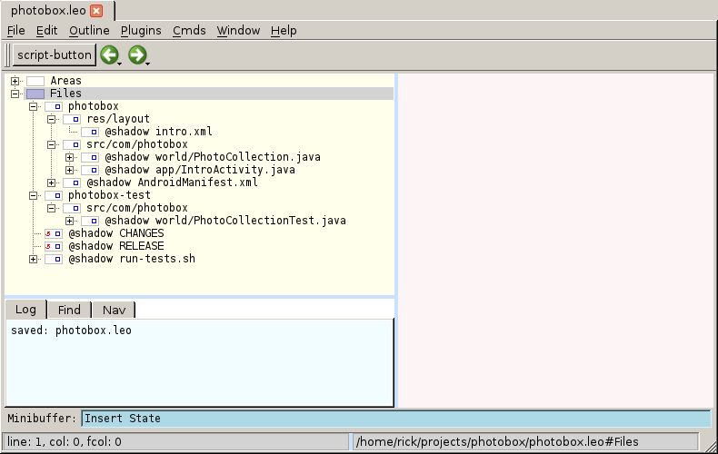
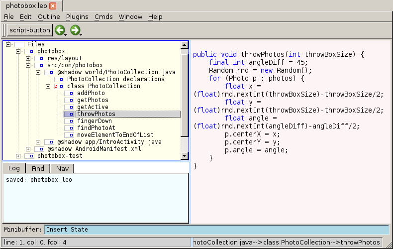
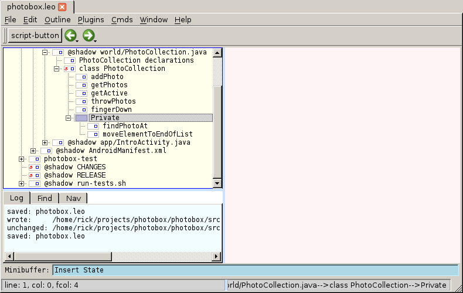
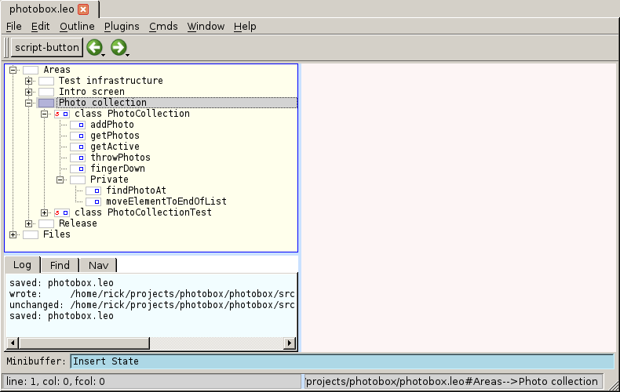
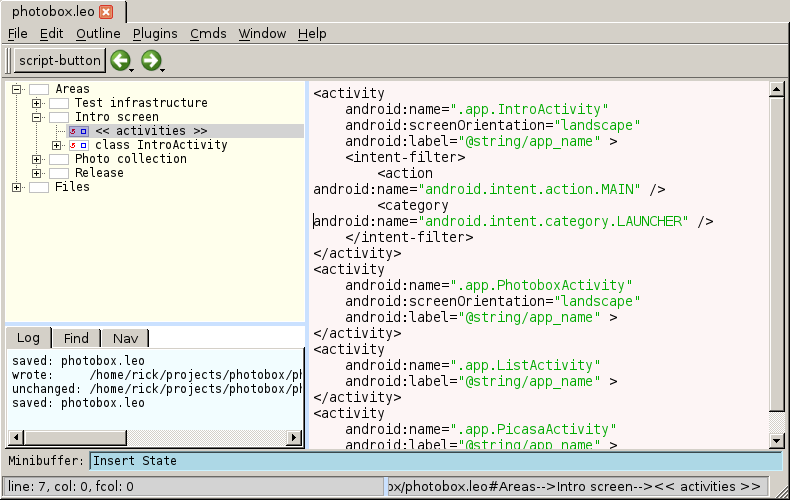

Published on 24 February 2013.
I think the organization of our code bases make them hard to understand because related things are not kept together. Let me explain what I mean by that.
A typical code base is organized something like this:
- doc/
- src/
- test/
- READMEIf we want to understand how a particular part of the code works, it is helpful to find the related documentation in the doc folder and the related tests in the test folder. The problem is that all information related to a particular thing is not kept together. We have to look for it in different places in the file system.
This separation makes it harder to understand and modify code.
Also, how can we know if corresponding documentation and tests exist? We have to scan all documentation and all tests to find out if something is related. And we have to do this every time. If all related things were kept together, we wouldn’t have to do this.
A less obvious thing that is spread out over the code base is the declarations of things and the usage of them. When we read a declaration of a function for example, we don’t immediately know where it is used. Having that information right next to the declaration would help understand in which contexts it is used.
I believe the biggest reason why we spread related things in our code bases is that we use the file system for organization. The file system is not very flexible. We have files and folders in a strict hierarchy, and that’s about it. It makes it hard to keep related things together.
Contrast this with a wiki where every page can link to any other page and we can create different table of contents by creating a new page and linking to the relevant pages. We can create different views of our data. A wiki is more suitable for organizing information than the file system.
Let’s look at how the file system makes it hard to keep related things together.
Why don’t we write tests next to the implementation?
Sometimes we do: In Python, there is a module called doctest that allows us to embed test code in comments right next to functions. It looks like this:
def factorial(n):
"""
>>> [factorial(n) for n in range(6)]
[1, 1, 2, 6, 24, 120]
"""
result = 1
factor = 2
while factor <= n:
result *= factor
factor += 1
return resultBut most of the time, we don’t write our tests like this. Why?
Some tests are not suitable as doctests: They might involve multiple functions so it is not obvious under which function to place them for example.
But I believe the biggest reason why we don’t mix test code and source code is that we don’t want to mix different things at the same level in the same source file. In the example above, it is pretty obvious that the test belongs to the factorial function because of the indentation, but consider this example:
def implementation(...):
...
def test_implementation(...):
...
def another_implementation(...):
...In this example, the invisible organization is this:
unit 1
implementation
test_implementation
unit 2
another_implementationWe don’t immediately see which parts of the file are related. We can only guess this organization from the formatting of the text and the naming. But guessing is the best we can do.
Unless we put a single unit of code in a file, the source file will have different things mixed together at the same level. We never know when the tests for one function ends and the implementation for the next begins.
One solution to this problem is to put section comments in our files:
# Unit 1
def implementation(...):
...
def test_implementation(...):
...
# Unit 2
def another_implementation(...):
...It might make it easier to know where a section begins and ends, but when scrolling through the file, it is still just a wall of text with no obvious structure. It is not an ideal way to show organization.
Why don’t we write documentation next to the implementation?
Sometimes we do: Tools like Doxygen allow us to write comments next to functions and then have API documentation automatically generated.
But it has the same problem as test code next to the implementation: it makes the file harder to read because there are many mixed things and there is no way to show the organization.
Also, some documentation may pertain to many aspect of the code, so putting it on a single function or file would not be optimal for understanding.
Why don’t we put usage next to declarations?
When using files to organize our code, this is simply impossible. Imagine all calls to a function being right next to where they are defined. It might work for a few functions, but certainly not for all. The file system is just not flexible enough to support this kind of organization.
Some IDEs allow us to show that information with the click of a button. But we still have to make a search. The code is not organized like that. The disadvantages of a search is that it might show us irrelevant results. A search can only give us the line where a declaration is used, but it might be the context around that line that helps us understand how it works. If we can put that piece of surrounding code (not just the call to the function) next to the declaration, we wouldn’t have to guess what surrounding code is important.
If the file system is such a bad tool for organizing, why do we use it? Probably because tools (compilers, document generators) expect the source code to be organized in a file system.
And the file system works for that purpose. We can organize our information so that tools can understand it. But it is less good for organizing information so that humans can understand it.
Let users organize their code, tests, and documentation in whichever way they find most usable. Then, and only then, figure out how to turn that organization into something which tools (compilers, documentation generators) can use.
(The last step is only necessary if tools don’t directly support the organization we want.)
I believe tools will depend on file system organization for a long time. So if we want to benefit from a better organization today, we must take this into consideration.
Next, I will show how Leo can solve the problems discussed in this post. Leo is a tool that allows us organize our data in a flexible way yet make sure it is written to the file system where it needs to be.
At a first glance, Leo looks like an outliner.
Here I’ve replicated parts of the file structure of an Android project inside Leo:

Every node that starts with shadow tells Leo that it is stored in an external file. When we modify it in Leo, it will be modified on disk as well. The outline mirrors the structure of the file system. So the file IntroActivity.java is located in the folder photobox/src/com/photobox/app/.
So far, this doesn’t add much value. It looks exactly like the file system. Let’s see how Leo allows us to improve our organization.
Inside each file, we can create nodes to explicitly show the structure of our source file (the poor alternative to this is section comments):

In this example, each method in the class is put in its own node. If we want, we can group related methods together under a name:

This is a bit better, but we still don’t have related things together. We can solve that by using clones in Leo. Clones allow us to show one node in multiple places in the outline.
Let’s say we want to gather all information about photo collections in one place. First we create a node called “Photo collection”, then we clone the “class PhotoCollection” and “class PhotoCollectionTest” nodes and put them as children to “Photo collection” :

When we change a cloned node, all places where that clone appears in the outline are changed. So if we want to work with photo collections, we never have to touch the “Files” tree. We can spend all time in “Photo collection” because all things related to that area is visible there as well.
Another example of clones shows how things related to the intro screen in the app have been kept together under a node:

I hope that I’ve convinced you that using only the file system to organize our code bases makes them hard to understand. It makes them hard to understand because related things are not kept together, and the structure is not clearly visible. I also hope that I’ve given you some ideas how we can improve the situation.
What is Rickard working on and thinking about right now?
Every month I write a newsletter about just that. You will get updates about my current projects and thoughts about programming, and also get a chance to hit reply and interact with me. Subscribe to it below.